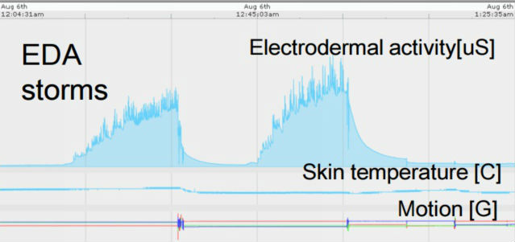

Study Me uses an accelerometer, EDA sensor, and a pressure sensor to detect when someone has fallen asleep and automatically wakes them up via a loud, irritating buzz that has been set to the optimal frequency.
This device has the potential to increase focus when studying and even save lives.
This technology has applications ranging from maintaining focus while studying to keeping people awake at the wheel. It can help notify drivers when they need to take a break and rest a little. Coded in Arduino C, this device makes use of the Arduino Microcontroller and the BitAlino bio-signal processing kit. Using a pressure sensor, EDA (electro-dermal activity) sensor, and a heart rate sensor, it detects when a user is falling asleep. Once the user has started to doze off, the device emits a high frequency buzz to keep them awake.
A study by MIT showed that EDA typically peaks during REM sleep and starts to rise in the light sleep phase. This knowledge can be leveraged to determine when a user is starting to fall asleep.
Dozing off while studying can waste time, causing students to lose more quality sleep. Moreover, according to the National Sleep Foundation, more than 4% of drivers (~11 000 000 people) suffer accidents due to falling asleep while driving.
Learn More